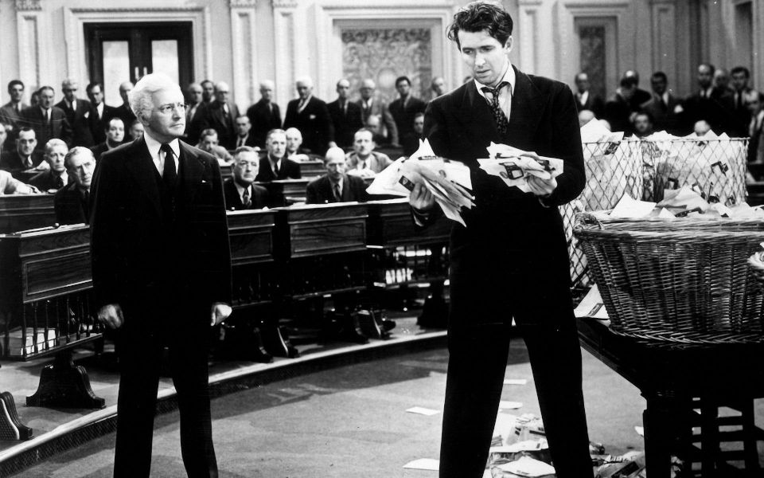

The Practical Utopian
The Practical Utopian
The Dangers of Political Nostalgia
By Herb Bowie
tags: critical thinking, democracy, governance

Former Vice President and presidential hopeful Joe Biden recently got himself in some hot water with progressives by publicly indulging in a bit of nostalgia for the good old days when elected representatives in DC could engage in civil discourse and “get things done,” even when they violently disagreed with one another.
I'm not quite as old as Biden, and I've never served in public office, but I can still share his nostalgia for seemingly simpler times when our political leaders displayed some sort of respect for each other, even when they disagreed over issues of state.
However it's one thing to reveal a preference for certain elements of those bygone days, but quite another to base your presidential run on wishful thinking that those lost elements can somehow be restored in the third decade of the 21st century. Both Joe Biden and Howard Schultz seem taken by this idea that a centrist presidency can somehow restore this lost era of civility, and bring both sides of the aisle to the table to engage in productive, common-sense discussions for the good of the country as a whole. Such a scenario plays well as a work of fiction – hence the return of the TV series Designated Survivor for a third season – but there are elements of our modern times that make it impossible for such a scenario to play out in current reality.
Mind the Gap
These previous times to which Biden and Schultz want to return featured a well understood process for making governmental decisions. This process looked something like this:
- Introduction of a topic;
- Sharing of varied perspectives;
- Discussion of alternatives;
- Formation of positions;
- Preparation for a decision: lining up allies, calling in favors, tallying likely votes;
- The actual vote and the announcement of the consequent action;
- Formation of a cohesive public narrative about what happened, including both factual reporting and Op-Ed pieces.
Some of these steps might have overlapped, but still there was a gap between the start and end of this process, leaving time for these various phases to occur as distinctly different sorts of activities, each given their proper due.
Today there is no gap. Take as example the recent US decision to not attack Iran. We all woke up one morning to reports of Trump's latest tweets, and saw all of these steps compressed into a single series of short public pronouncements directly from our commander-in-chief, up to and including the presentation of the prescribed narrative lens through which we should view these events. All our news media could do – no matter which channel or station or network you chose – was to dutifully report the content of these tweets repeatedly throughout the day.
And while this might seem an extreme example, it is a representative one. All steps of our political process today are taken with a single thought in mind: how this will look, how this will sound, how this will play in the news media. And so there is no opportunity to give steps 1 - 6 their due, no matter how fervently we might wish for such an opportunity. And there seems no way to turn back the clock on any of this. This is just a basic element of our modern, competitive, 24-hour cycle of news and commentary delivered relentlessly by our phones, our computer screens, our radios, our print media and our televisions.
The Loss of Genuine Regional Differences
Back in those lost days that Biden pines for, there were very genuine regional differences of perspective in our country. Take, for example, the presidential election of 1968. George Wallace ran on an openly segregationist platform, and he won a predictable bloc of Southern states.
As anyone who has watched the recent film The Green Book might understand, those were times when the perspectives on issues like civil rights varied sharply in different parts of our country, and there was often a lack of understanding of those differences until they were actually confronted.
These genuine regional differences formed because a person's understanding of the world around them back then was based much more on face-to-face discussions with neighbors and coworkers, and on consumption of news from local outlets. There was no social media, no USA Today, no CNN, no internet, no cable television.
This loss of regional identity was brought home to me recently when I met someone who had attended the same midwestern college I had, but had originally hailed from a southern state. I commented that she didn't seem to have much of an accent, and she smiled at me (a bit condescendingly, I thought) and explained, without the slightest hint of a drawl, that she had been raised in a big city in the South.
You can see this change as well in the results of the 2016 presidential election. Even though diversity and inclusion were certainly defining issues for both candidates – as they were for Wallace in ‘68 – Trump’s victory included a far broader swath of states, and ones that fell into no neat regional categories. The West Coast went for Clinton, and the South went for Trump, but closer examination by county reveals that the political divisions were much more along urban/suburban/rural lines than along strictly regional ones.
And so whereas back in the sixties politicians traveling to DC had genuinely differing regional perspectives to share and explore with one another, today's politicians – especially in the Senate – no longer have real regional identities that they are representing. Instead these have been largely replaced by national party loyalties, which are already well defined and battle-hardened, leaving little room for any sincere discussion.
Again, any thoughts of turning back the clock in this regard lack any solid grounding in reality.
At Least One Party of Extreme Fundamentalists
Republicans in recent years have thoroughly adopted the thinking that Democrats/liberals/progressives of all stripes are less than human and represent a fundamental and existential attack on all that is good and decent about American society.
Based on this sort of thinking, Republicans have consistently taken the position that the goal of political victory is so important that it justifies any means taken to achieve it, no matter what laws or rules or expectations of fairness and decency must be broken to achieve it.
The current drama playing out in Oregon is evidence of both this point, and the one above, with Republican state senators heading for the hills and hiding out in order to deny the Democratic majority the ability to lawfully pass a cap-and-trade bill.
A president like Donald Trump is the inevitable consequence of this line of reasoning. No matter whether our current crop of Republicans are actually aligned with Trump or only pretending to fully support him, Kurt Vonnegut's conclusion from the novel Mother Night still applies:
We are what we pretend to be, so we must be careful about what we pretend to be.
The current Republican party has not been careful about what it pretends to be, and it seems unlikely that any of their current elected representatives are capable of being somehow redeemed and turned overnight back into honest upstanding citizens capable of open, inquisitive and respectful debate.
I am certainly not claiming that all Democrats are solidly above similar sorts of political warfare: far from it. But no matter how much potential might or might not exist on the Democratic side of the aisle, there is no prospect at all of redemption on the Republican side.
And so it will not be possible to suddenly turn back the clock here either, especially in a single election cycle. We may not like trench warfare, but it's what we've got for now, and we've got to first survive the trenches before we can begin to contemplate some sort of more refined discussion and debate in the halls of Congress.
Dangerous Delusions
It is a common fallacy to imagine our presidents have more power than they actually possess – one reason for our frequent disillusionment with them.
During our current election cycle, some of our older candidates seem to be basing their centrist campaigns on the delusion that, once elected to this office, they will gain the power to suddenly restore civility to our national political arena.
But, no matter how many reruns of Designated Survivor they watch, there are forces at play in our modern society that allow no chance at all of such a narrative playing out in real life.
With so much at stake in our upcoming national elections, there is no room for magical thinking. We have to base our political calculations on the way things are today, not the way we wish they were, or the way they used to be at some point in the now far distant past.
If our candidates really wish to learn something useful from the sixties, they might be better off refreshing their memories of Bob Dylan's song “The Times They Are A-Changing',” for the changes in civic discourse that we've experienced show no signs of stopping, let alone being reversed.
Published 2019 Jun 25
 Content at Practopian.org is Copyright © 2009 - 2020 by Herb Bowie except where otherwise noted
Content at Practopian.org is Copyright © 2009 - 2020 by Herb Bowie except where otherwise noted